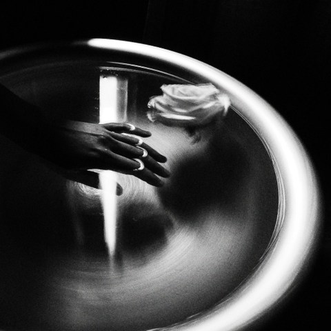
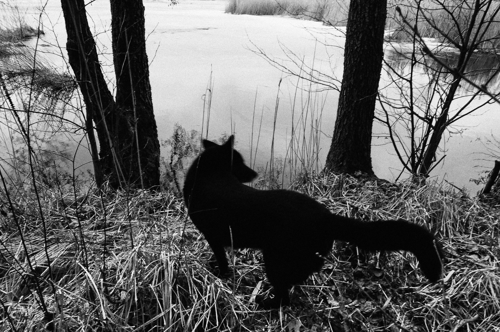
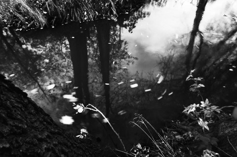
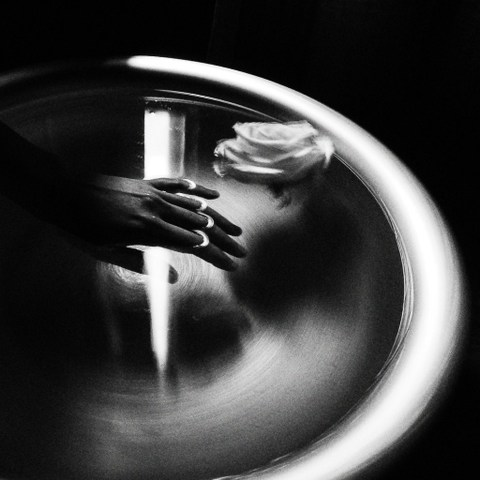
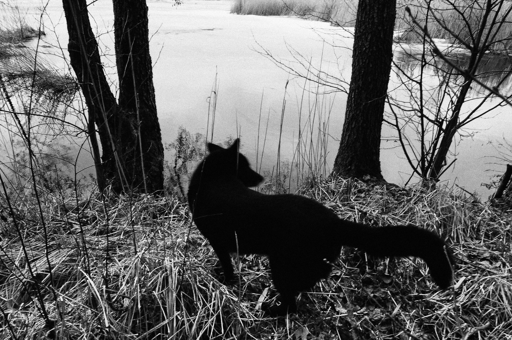
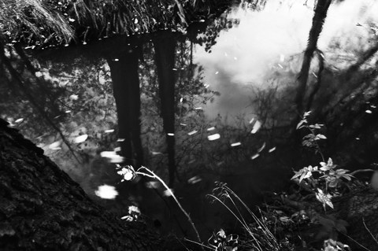

Интервью с Еленой Харитоновой
Анна Белова: Как приходит идея создания снимка?
Елена Хаританова: Я всегда говорю, что нет никаких идей. Есть жизнь, всё произрастает из неё.
АБ: Что в жизни может быть поводом? Как вы чувствуете момент, что готовы?
ЕХ: В разные периоды было по-разному. Бывали моменты, когда не можешь не снять и снимаешь. Или, когда плохо, снимаешь. Когда хорошо, часто не снимаешь (смеётся). Думаю, фотографии всегда меня лечили. Вытаскивали, давали перейти рубеж. Сейчас я делаю более лёгкие фотографии. А все тяжёлые дали мне возможность выдержать, чтобы я дальше жила, чтобы вообще жила. Для меня это всё очень серьёзно, это не просто — взял идею, концепт (смеётся).
АБ: Мне кажется, что в ваших снимках по-особенному течёт время. Как вы сами это ощущаете и какие у вас с ним, со временем, отношения?
ЕХ: Это называется внутреннее течение времени. И оно у меня медленное. Я успеваю замечать все детали. Кто-то переделал кучу дел, чего-то достиг, то купил, туда отправил. А я всё ещё сижу и наблюдаю (смеётся). Это время, видимо, где-то там, в душе. Люди живут быстротечностью, поэтому и времени у них нет, а у меня его полно. Я не знаю, как это лучше выразить. Кое-что есть в стихах. И стиль изображения сложился из этого потока времени. А ещё из-за скудного технического оснащения. Всё, что у меня появлялось в жизни, аппараты, техника, всё соотносилось со временем. Почему длинная выдержка? Почему настройки подёргала, и что-то пошло? Может, и денег у меня не было, чтобы я к этому пришла. Иногда думаешь, а вот как удачно-то! Был только штатив и камера — всё. И время туда уложилось. Оно должно быть внутри у человека. И тогда ты его можешь тянуть как угодно.
АБ: Что вы можете сказать про пространство внутри ваших кадров?
ЕХ: Объяснить всё, что я для себя поняла, у меня не хватит слов. Я не мистификатор, хоть меня так и называют. Ни разу никаких духов не видела. Совершенно твёрдо стою ногами на земле. Человек рациональный и практичный (смеётся). А вот пространство… Ещё в детстве смотришь долго в одну точку в углу, например, а она расширяется, удлиняется, туннели образуются. Вот также и в фотографии. А если быстро раз-раз снял и пошёл, ничего и не заметил.
АБ: Какой ключик вы можете дать смотрящему, чтобы он мог попасть в ваше изображение?
ЕХ: Если одним словом, то это расфокусировка. Расфокусировка взгляда и сознания. Если ты просто смотришь, то перед тобой определённые вещи: стул, стол и прочее. Если не расфокусируешься, не отпустишь, то ничего и не увидишь.
 




